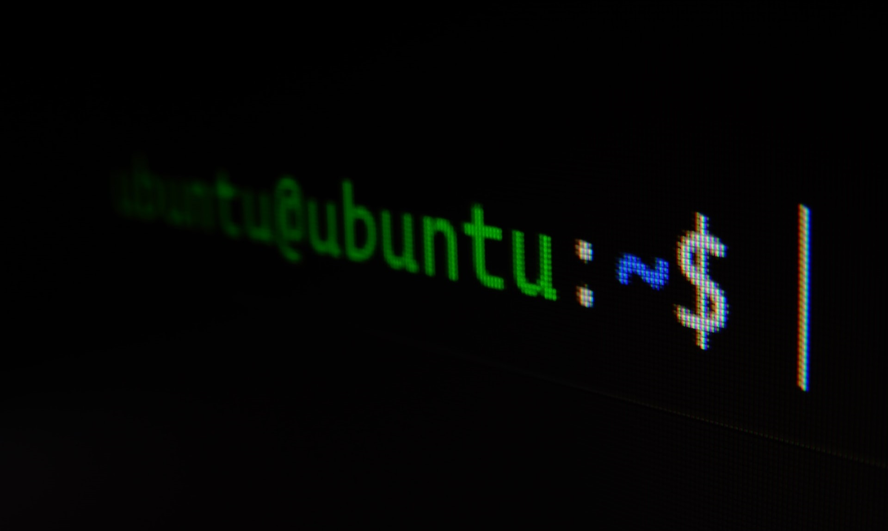

Interface de linha de comando
Contents
Interface de linha de comando¶
{kind=link}
Nota
Esta seção é opcional. Apesar de não ser estritamente necessária para acompanhar o resto do livro, acreditamos que aprender os fundamentos de operações com interface de linha de comando é essencial para o bom desenvolvimento em longo prazo. Você provavelmente encontrará diversas situações em que seja necessário utilizar algum comando em linha. Além disso, dependendo da situação (ironicamente) é mais rápido e fácil fazer certas operações em linha de comando que usando uma interface gráfica de usuário.
Interface de linha de comando (em inglês command line interface ou CLI) é a forma tradicional de operarmos computadores, antes de haver o que chamamos de interface gráfica de usuário (em inglês graphical user interface ou GUI). Hoje em dia é raro ter alguém que interaja com sistemas operacionais somente em linha de comando (a menos que você seja administrador de sistemas). No entanto, há diversas vantagens em utilizar linha de comando:
Rapidez: por incrível que pareça, há muitas situações em que é mais rápido executar algo por linha de comando que usando interface gráfica. Compare o tempo gasto com digitar
⊞ Win(superno Linux) + o nome do programa desejado com tempo de entrar no menu, navegar até achar o ícone do programa e clicar no mesmo.Memória e CPU: é muito menos custoso computacionalmente usar linha de comando que usar interfaces gráficas.
Automatização e repetição: pode ser cedo para pensar nisso, mas seu eu futuro te agradecerá. Conforme massas de dados são acumuladas, começa a se tornar tedioso mexer em arquivos individualmente. Operar em linha de comando facilita a repetição e automatização de tarefas.
Vamos ver os fundamentos de interface de linha de comando nos sistemas operacionais Windows e Linux.
Windows¶
Há duas formas principais de usar a interface de linha de comando no Windows - o tradicional prompt de comando (cmd) e o PowerShell. Ambos são similares, mas versões mais atuais do Windows (a partir do Windows 7) dão preferência para o PowerShell. Na prática ambos têm o mesmo objetivo, com o PowerShell englobando praticamente tudo o que pode ser feito no cmd, enquanto o contrário não é verdade.
Ferramentas: cmd ou PowerShell¶
Você pode acessar ambos buscando no menu inicial ou usando a tecla
⊞ Win(Windows) e digitandocmdouPowerShellno buscador;Você pode usar o atalho
⊞ Win+X+Ipara acessar oPowerShell;Para sair do
cmdouPowerShell, use o comandoexitou clique no botão de fechamento ✖ para fechar a janela.
Comandos úteis cls e histórico de comandos¶
Conforme vamos utilizando o cmd ou PowerShell, o console fica cheio de comandos anteriores. Para limpar a tela do console, use cls (de clear screen, limpar tela):
E:\>cls
Perceba que cls não apaga nenhum comando anterior - ele simplesmente “empurra” os comandos anteriores para cima, para não atrapalhar visualmente o console. Você pode acessar os comandos anteriores utilizando as teclas ↑ e ↓ . Esses comandos são muito úteis caso você queira recuperar o que fez anteriormente, mas principalmente para não ter que digitar novamente um comando parecido.
Você também pode navegar ao longo da linha. Por exemplo, para mudar o cursor para o início da linha você pode usar a tecla ← até chegar lá ou usar HOME. O mesmo para o fim da linha, com → ou END.
Criando e apagando pastas¶
Você pode criar novas pastas utilizando o comando mkdir (de make directory, criar diretório). Vamos criar uma pasta safras no drive E:
E:\>mkdir safras
Você também pode remover pastas usando o comando rmdir (de remove directory, remover diretório) e confirmar usando o comando *:
E:\>dir safra*
O volume na unidade E é Disco Local
O Número de Série do Volume é 6A7C-13B5
Pasta de E:\
20/03/2022 21:31 <DIR> safras
0 arquivo(s) 0 bytes
1 pasta(s) 900,025,401,344 bytes disponíveis
E:\>rmdir safras
E:\>dir safra*
O volume na unidade E é Disco Local
O Número de Série do Volume é 6A7C-13B5
Pasta de E:\
Arquivo não encontrado
E:\>
O comando rmdir, no entanto, não serve para apagar pastas que contenham conteúdo (somente com pastas vazias). Vamos recriar a pasta safras, e dentro dela criar uma pasta safra2012:
E:\>mkdir safra
E:\>cd safra
E:\safra>mkdir safra2012
E:\safra>dir
O volume na unidade E é Disco Local
O Número de Série do Volume é 6A7C-13B5
Pasta de E:\safra
20/03/2022 21:46 <DIR> .
20/03/2022 21:46 <DIR> ..
20/03/2022 21:46 <DIR> safra2012
0 arquivo(s) 0 bytes
3 pasta(s) 900,025,401,344 bytes disponíveis
E:\safra>
Ao tentar remover a pasta original com rmdir, obtemos o seguinte resultado:
E:\safra>cd ..
E:\>rmdir safra
A pasta não está vazia.
E:\>
Ajuda e comandos auxiliares¶
O caso anterior é um bom momento para usarmos a ajuda. Cada comando no cmd ou PowerShell pode ser adicionado de /? para acessar a ajuda:
E:\>rmdir /?
Remove (exclui) uma pasta.
RMDIR [/S] [/Q] [unidade:]caminho
RD [/S] [/Q] [unidade:]caminho
/S Remove todas as pastas e arquivos da pasta
especificada, além dela mesma. Utilizado para remover uma
árvore de pastas.
/Q Modo silencioso. Não pede confirmação para remover a árvore de
pastas ao se passar o parâmetro /S.
E:\>
Agora sim, sabemos que para apagar uma pasta e todo seu conteúdo precisamos do comando rmdir e mais um comando adicional /s. O console irá apresentar uma confirmação antes de finalmente apagar a pasta. Você precisa explicitar com S para sim e N para não. Se seu Windows estiver em outra língua (como inglês, por exemplo) é possível que seja perguntado Y para sim e N para não.
E:\>rmdir /s safra
safra, Tem certeza (S/N)? S
E:\>